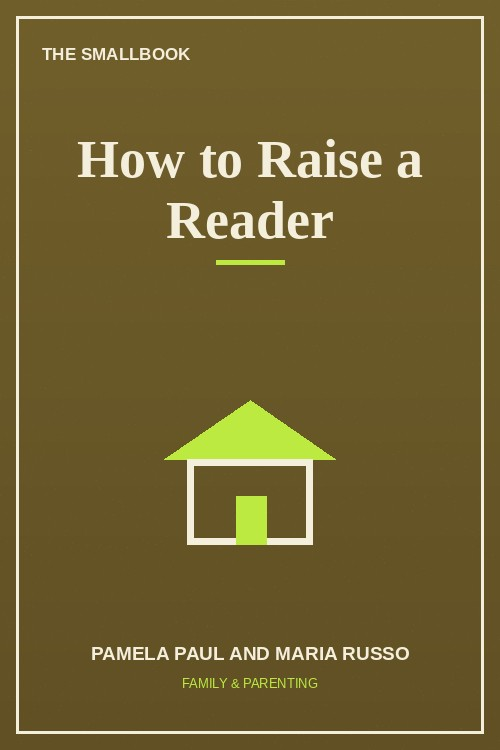

Library › Family & Parenting
How to Raise a Reader - Summary & Key Lessons

From the editors of the New York Times Book Review: a stage-by-stage guide to growing children who love books.
📖 OPEN THE FULL INTERACTIVE BREAKDOWN →🌐 Read it in Hindi, Hinglish, Gujarati, Tamil & 22 more languages, with audio.
💡 The Big Idea
Pamela Paul and Maria Russo, who ran children's coverage at the New York Times, wrote the practical guide: what reading looks like at each age from baby to teenager, how to stock a home, survive the graphic novel panic, handle the middle school drop-off, and keep teenagers reading. Their doctrine is relaxed and firm: read aloud long past necessity, let children choose, treat screens as a rival to outbid rather than a demon to exorcise, and never make reading the broccoli of childhood.
🧠 The 8 Key Lessons
Lesson 1: Read Aloud Years Past Necessity
Baby to Big Kid
The guide's most emphasised finding: children benefit from being read to long after they can decode alone, because listening comprehension runs ahead of reading skill for years, and the read aloud hour is also attachment, vocabulary and a front row seat to a parent loving a book. Families who stop at independence lose the best years, when chapter books get interesting. Pamela Paul and Maria Russo give age by age tactics, from board book chewing to the chapter book cliffhanger left deliberately overnight.
📖 Example: They quote parents who read Harry Potter aloud to twelve year olds fully capable of reading it, reporting the nightly chapter as the family's last reliable congregation. The rule they extract: stop when the child fires you, not when the school says they are fluent. Read the full example →
⚡ Do this: Restart or extend the read aloud tonight: fifteen minutes, a book slightly above your child's solo level, cliffhanger endings encouraged.
Lesson 2: Let Them Choose, Especially the Dinosaur Book Again
The Choosing Doctrine
Against parental curation anxiety, the editors argue for child choice as the engine of the reading habit: rereading the same book forty times builds fluency and joy, graphic novels are real reading, series fiction is a gateway and not a gutter, and the parent's snobbery is the most common home grown obstacle. The adult's job is supply and applause: libraries visited, shelves stocked sideways, and no visible disappointment at the choice made.
📖 Example: Their case files include the boy who read only nonfiction about sharks for a year and emerged a ferocious reader of everything, and the girl whose graphic novel summers carried her to Austen by fifteen. The corridor, they insist, widens from inside; pushing from behind mostly teaches that reading is where parents disapprove. Read the full example →
⚡ Do this: This week, let your child choose three books entirely themselves at the library or shop. Read or hear about each without one corrective sigh.
Lesson 3: The Middle School Cliff and the Teenage Treaty
Older Children and Teens
Reading collapses for many children at eleven to thirteen, under homework, phones and social weather. Pamela Paul and Maria Russo's countermeasures are practical: protect even ten minutes, connect books to the child's current obsessions without embarrassment, audiobooks count fully, and negotiate screen treaties as a family rather than confiscating into a cold war. For teenagers, the advice turns to respect: recommend like a friend, lend without quizzes, and let their taste sometimes lead yours, which it increasingly deserves to.
📖 Example: A father kept his fourteen year old reading by surrendering: he read the son's dystopian series and argued about it at dinner as an equal. The boy now lends him books. The editors call this the handover, and mark it as the guide's true graduation ceremony. Read the full example →
⚡ Do this: Ask your older child for one recommendation and read it this month. Discuss it as a fellow reader, not an examiner.
Lesson 4: The Home Library Is a Climate, Not a Shelf
Setting the Stage
Pamela Paul and Maria Russo argue that children read in houses where books are ambient: in reach, in piles, in bathrooms and cars, owned and library borrowed in careless abundance. The research they cite is blunt: the number of books in a home predicts educational outcomes across countries, not because books are magic but because they advertise what the household values. Their advice is architectural: lower the shelves, scatter the stock, and let the library look loved rather than curated.
📖 Example: They describe the homes of readers they interviewed for the book: books face out at toddler height, a basket by the sofa, library fines treated as a utility bill. In house after house the parents were unremarkable about method and remarkable only about supply, which is the chapter's encouraging point. Read the full example →
⚡ Do this: This week install the basket by the sofa and one face out shelf at your child's eye level. Fill both from the library.
Lesson 5: Series, Comics and the Gateway Doctrine
What Counts as Reading
The editors spend a chapter disarming parental snobbery with outcomes: the child inhaling a forty book series is practising stamina, vocabulary and narrative architecture at volume; the graphic novel reader is decoding two symbol systems at once. Gateways, in their files, reliably widen: today's Dog Man devotee is tomorrow's Dickens reader at rates no assigned classic matches. The only true dead end they identify is the child taught that their taste is a disappointment, who stops reading where parents can see.
📖 Example: A mother confesses in the book to hiding her son's comic habit from her book club, then watching him out read every curated child in the neighbourhood by thirteen. The editors print her confession as the doctrine's testimony: the corridor widened from inside, on schedule, without one corrective sigh. Read the full example →
⚡ Do this: Buy or borrow the next volume of whatever your child is inhaling, without commentary on its merits. Note the date; watch the corridor.
Lesson 6: The Read Aloud Troubleshooting Chapter
When It Is Not Working
For the child who wriggles, interrupts, or declares books boring, Pamela Paul and Maria Russo supply field repairs: shorter sessions ending mid cliffhanger, books tied to the child's ruling passion however unpromising, nonfiction and joke books deployed without shame, movement allowed, snacks permitted, and the solemn rule that the read aloud is never withdrawn as punishment, because that teaches the one lesson the book exists to prevent: reading as the opposite of pleasure.
📖 Example: Their favourite rescue is the boy cured of book hatred by a single volume on disgusting animal facts, read in voices, at his request, nightly for a month. He is a biologist now. The editors do not claim the book made him one; they claim disgust, properly honoured, made him a reader, and readers make themselves. Read the full example →
⚡ Do this: If read aloud is failing, change the book to the child's ruling passion this week and shorten to ten minutes ending mid scene.
Lesson 7: Screens: The Treaty Approach
Reading in a Digital Age
Against both prohibition and surrender, the book prescribes treaties: negotiated, written, family wide agreements that protect reading's prime real estate, the hour before bed, the car journey, the lazy weekend morning, while leaving screens their own honest territory. Children, they found, accept and even defend treaties they helped draft, and rebel mainly against confiscations announced in anger. The editors' own households run on such treaties, reviewed termly like constitutions.
📖 Example: One family treaty in the book reserves the last hour before bed for paper for every member, parents' phones charging in the kitchen as exhibits. The children became its fiercest enforcers, fining their father in push ups, a constitutional court the editors clearly envy. Read the full example →
⚡ Do this: Draft your family's screen treaty this weekend with the children at the table. Protect the pre bed hour first.
Lesson 8: Raising a Reader Who Raises Readers
The Long View
The closing chapter widens to the inheritance: adults who read raise readers disproportionately, not through instruction but through climate, the parent visibly lost in a book being the single most replicated scene in readers' childhood memories. Pamela Paul and Maria Russo end with permission and a charge: your own reading life is a parenting instrument, so protect it like one, and the child arguing about bedtime reading at ten is, statistically, the adult who will read to yours.
📖 Example: They quote a novelist who traced her career to a father who read at the kitchen table every morning of her childhood and never once recommended a book. The silence was the syllabus. She now writes novels her own daughter pretends not to read. Read the full example →
⚡ Do this: Read your own book visibly for twenty minutes daily this week, in shared space, for pleasure. That is the lesson; let it teach.
✅ 5-Step Action Plan
- Read aloud fifteen minutes tonight, above solo level.
- Library trip this week: three books, child's choice, no sighs.
- Count audiobooks as reading in your house, officially.
- Protect ten minutes on school nights like a fixture.
- Read your teenager's recommendation this month.
- Stock sideways: books in cars, bathrooms, bags, not only shelves.
- Never use reading as punishment or tax; keep it the treat.
⚠️ When This Doesn't Work
Book lists in any guide date quickly and skew to its market; the methods are the durable part. Children with reading difficulties need assessment and specialised approaches alongside, not instead of, this book's warmth.
💀 The Graveyard Proves It
💬 Best Quotes from How to Raise a Reader
- “The single most important thing is to read to your child, and to keep reading long after they can read themselves.”
- “Let them choose. A child who chooses the book owns the reading.”
- “Reading should be the treat, never the tax.”
Interactive version: mark lessons as read, listen in your language, share quote cards.